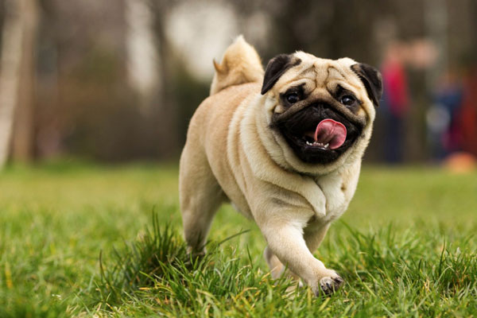
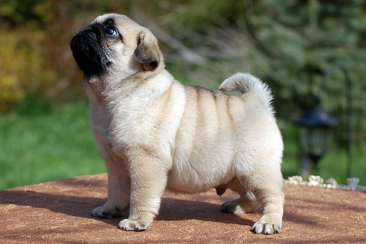

Đã qua rồi quãng thời gian mà Poodle bị coi là giống chó khó tính. Giống chó này là bất kì cái gì trừ việc là giống chó bướng bỉnh. Được biết đến là những chú chó thông minh và hài hước, chú chó Poodle thường thích là trung tâm của sự chú ý và chỉ muốn trở thành bạn của mọi người.
Pug là giống chó sở hữu thân hình cân đối, khỏe mạnh. Chúng có bộ lông màu từ vàng kem đến vàng nâu (màu đỏ không được công nhận). Bộ lông được cấu tạo bởi lớp lông không thấm nước bên ngoài và một lớp lông mịn dày bên trong. Chúng có cái đầu to, mõm hơi vát nhưng kèm với bộ hàm rộng và rất khỏe cùng với hàm răng sắc bén. Mũi có màu đen, mắt biểu cảm màu nâu với viền sẫm. Đôi tai cỡ nhỡ, cụp. Cổ dài, khỏe và khá cơ bắp. Ngực rộng. Đuôi dài và không bao giờ cong.
